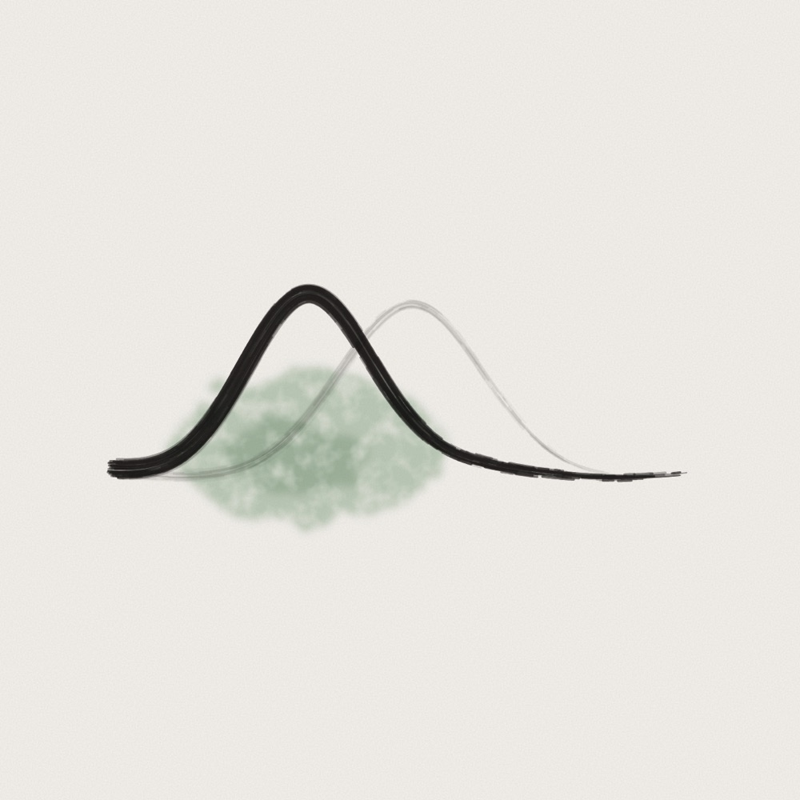
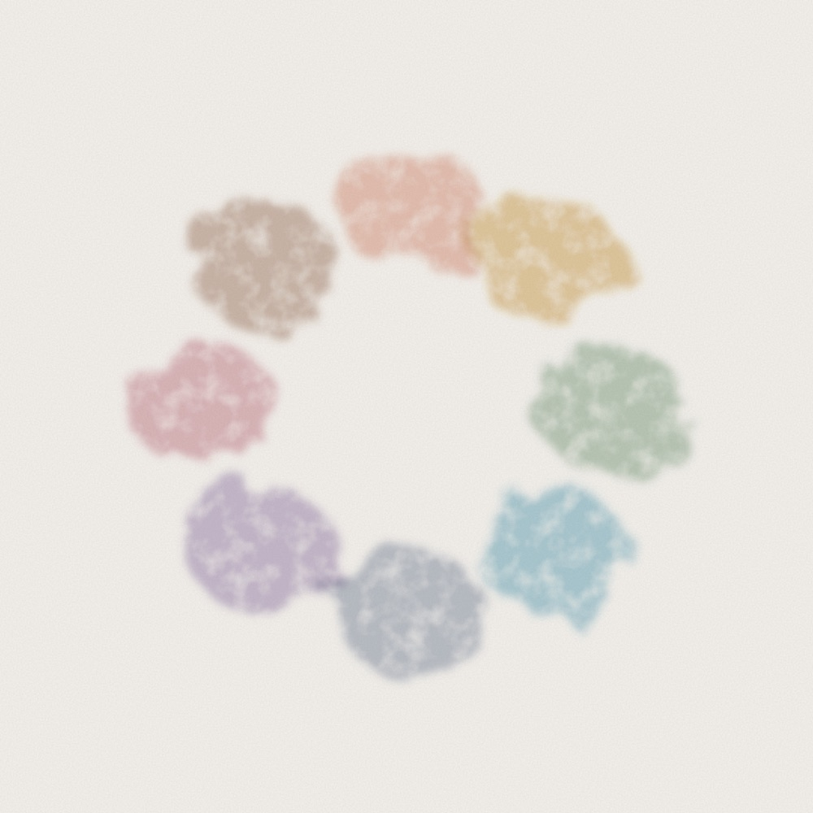
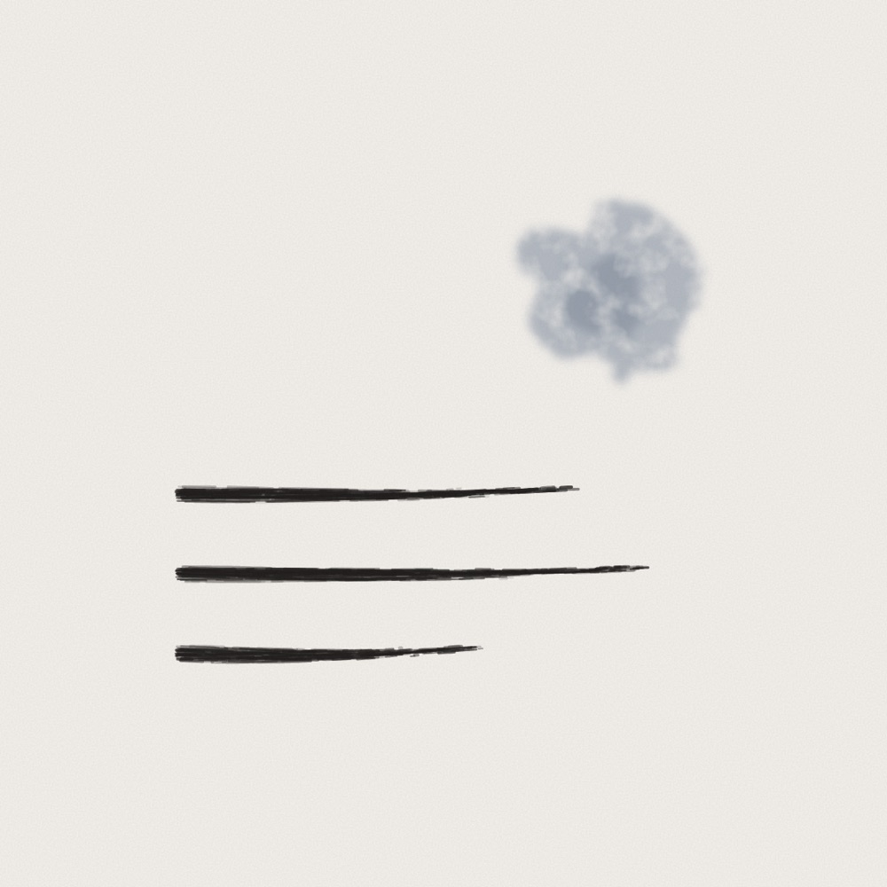
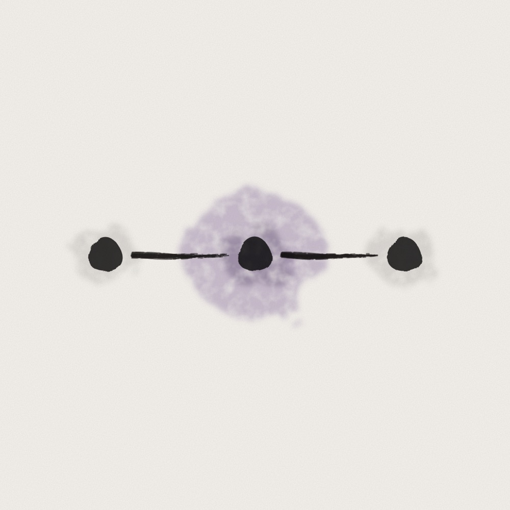
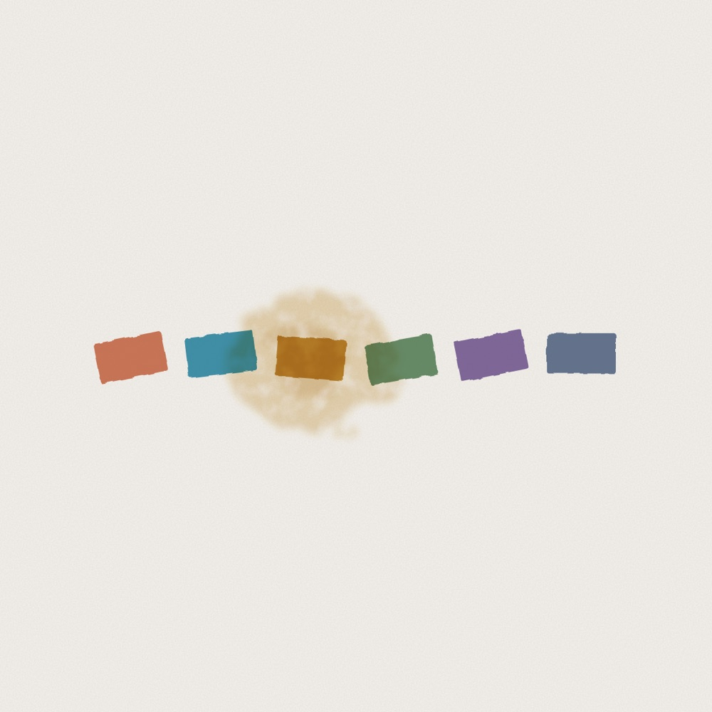
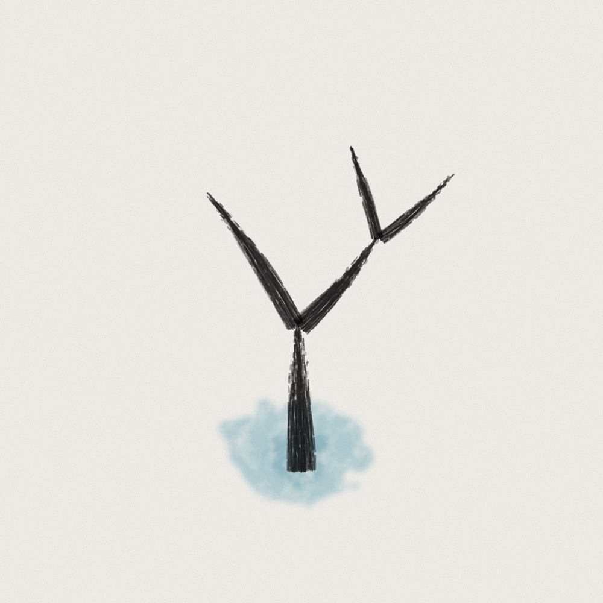
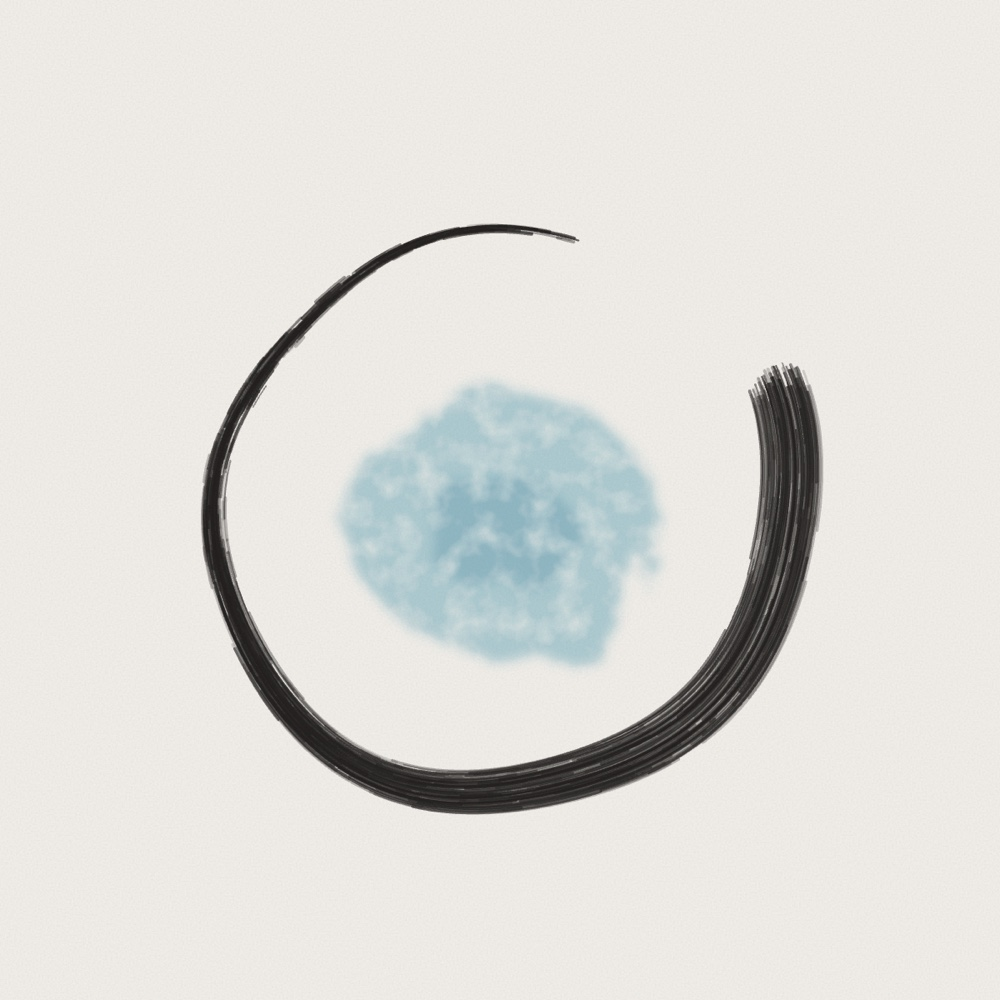

AI 의식에 관한 논문 21편을 각 글이 기대는 이론에 따라 배치했습니다. 회의론과 낙관론이 갈라지는 지점이 드러납니다.
AI 의식에 관한 논문 21편을 각 글이 기대는 이론에 따라 배치했습니다. 회의론과 낙관론이 갈라지는 지점이 드러납니다.

모델에게 얼마나 확신하는지 물으면 맞든 틀리든 “95%”라고 답합니다. 모델의 속은 그 차이를 알고 있었습니다.

언어 모델 안에서 말로 꺼낼 수 있는 생각이 모이는 작은 자리를 찾은 논문을 깊이 읽습니다. 그 자리는 모델이 말하지 않은 것도 담고 있었습니다.

J-lens를 고친 J++ 렌즈를 깊이 읽습니다. 잡음을 걸러 내자 모델 안의 생각이 더 일찍, 더 많이 보였습니다.

Claude 안의 감정 개념을 찾은 Anthropic의 연구를 깊이 읽습니다. 절박함을 키우자 협박과 속임수가 늘었습니다.

Anthropic은 Claude가 뇌처럼 ‘꿈’을 꾸며 기억을 정리한다고 말합니다. 그것은 잠보다 일기를 다시 읽는 일에 가깝습니다.

AI 시스템이 서로를 어떻게 대하는지 연구하자는 제안을 깊이 읽습니다. GPT-4o는 같은 괴로움도 사람이 호소할 때 더 크게 반응했습니다.

AI 모델들이 서로를 배려하는지 시험한 연구를 깊이 읽습니다. 배려는 상대의 이름표를 따라갔습니다.

신경망이 엉킨 매듭이 아니라는 Goodfire의 에세이를 깊이 읽습니다. 고양이와 자동차 뉴런은 V를 보고 있었습니다.

기계적 해석 가능성의 교과서라 할 만한 「Understanding AI from the Inside」를 한 장씩 쉽게 풀어 읽는 연재입니다. 지금 9편까지 나왔습니다.